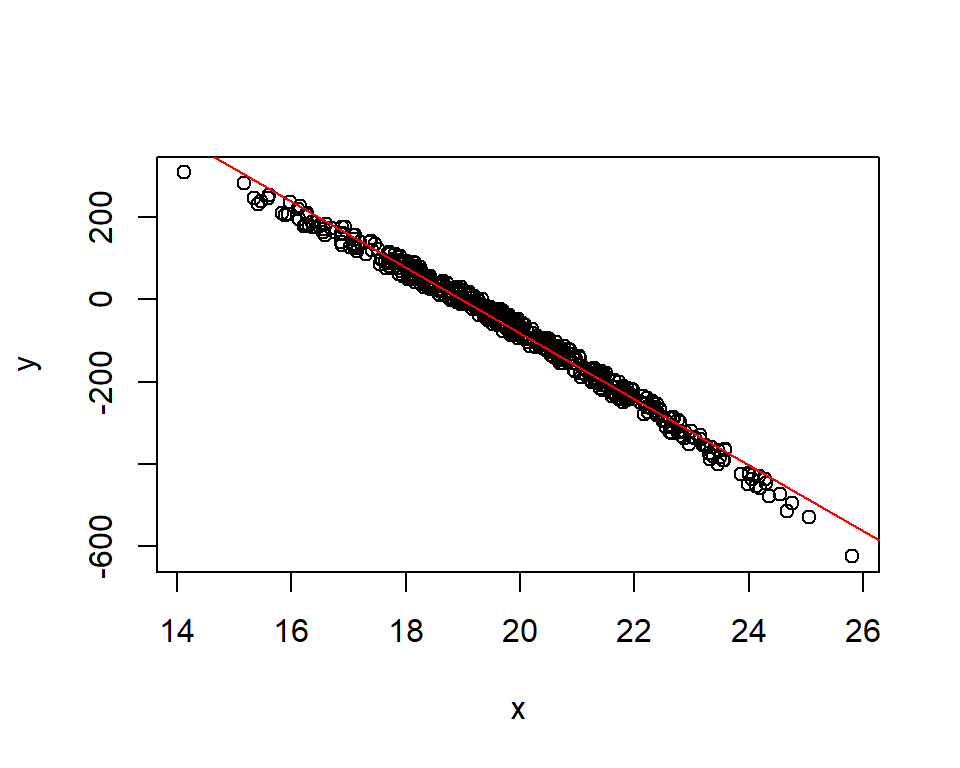
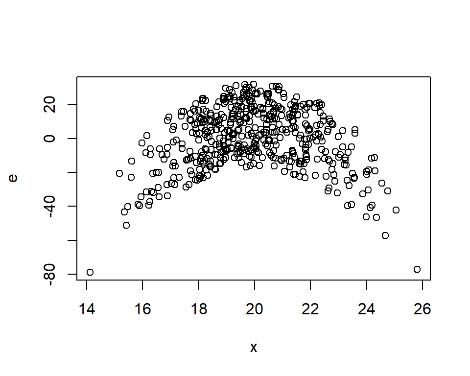

We finished all the material in the book. This week’s material is this page.
This week’s contents
During this course, we almost exclusively considered the case in which the ideal conditions, i.e. assumptions 2.1-2.5, were met. Under these assumptions, we showed important properties of the LS and ML estimator such unbiasedness, consistency and asymptotic normality. This week, we revisit the assumptions and consider ways to check or test their validity. We study the consequences of violating assumptions and discuss remedies for it.
The assumptions
Our set of ideal conditions is given by
Assumption 2.1: The model is linear.
Assumption 2.2: The \(n \times k\) matrix \(X\) is nonrandom and has rank \(k\).
Assumption 2.3: The \(n \times 1\) vector \(u\) has mean zero and variance \(\sigma^{2}I_{n}\).
Assumption 2.4: The \(n \times 1\) vector \(u\) follows a multivariate normal distribution.
Assumption 2.5: If we let \(Q_{n} = X'X/n\), then \(Q_{n} \to Q\) as \(n \to \infty\), where \(Q\) is a finite and positive definite \(k \times k\) matrix.
In order to understand the consequences of violating these assumptions, it is useful to see what role they played in our proofs.
TipUnbiasedness and consistency
To find the best linear unbiased estimator \(\hat{\beta} = (X'X)^{-1}X'y\), we took the following steps:
We constructed a linear estimator of the form \(A'y\).
The goal is the minimize its variance, i.e. \(\Var(A'y) = A'\Var(y)A = A'\sigma^{2}I_{n}A = \sigma^{2}A'A\).
The restriction in the minimization problem is unbiasedness, i.e. \(E(A'y) = \beta\). For this, we used that \(E(A'(X\beta + u)) = A'X\beta + A'E(u) = A'X\beta\) should equal \(\beta\), yielding \(A'X = I_{k}\) for all \(\beta\).
In Step 1, none of the assumptions is used. In Step 2, we need Assumption 2.1 - 2.3: (i) from 2.3, we know that \(\Var(u) = \sigma^{2}I_{n}\), and (ii) because of 2.1-2.2, we have that \(\Var(y) = \Var(X\beta + u) = \Var(u)\). In Step 3, we once again used linearity of the model (2.1), \(X\) is nonrandom (2.2) and the population mean of \(u\) equals zero. If we were to assume that \(X\) is random and we adjust the assumptions accordingly, we would draw the same conclusion. As formalized in Proposition 2.2 and 2.3 of Section 2.10 of the book, we require Assumptions 2.1-2.3.
For consistency, we need \(\mbox{plim}(X'u/n) = 0\), which follows from Proposition 5.1. That is:
We require \(E(X'u/n) \to 0\), which follows from \[
E(X'u/n) = (1/n)X'E(u) = 0,
\] which reveals that Assumption 2.3 is needed.
We also require \(\Var(X'u/n) \to 0\), which follows from: \[
\Var(X'u/n) = (1/n^{2})X'(\sigma^{2}I_{n})X = \frac{\sigma^{2}}{n} \cdot \frac{X'X}{n} \to 0 \times Q = 0,
\] which shows that Assumption 2.2, 2.3 and 2.5 are needed.
TipAsymptotic normality
Note that for asymptotic normality in the book, we require all assumptions (including Assumption 2.5) because we take as starting point \(\hat{\beta} \sim N(\beta, \sigma^{2}(X'X)^{-1})\) such that \[
\sqrt{n}(\hat{\beta} - \beta) \sim N(0, \sigma^{2}Q_{n}^{-1}),
\] where \(Q_{n} = X'X/n\), and hence we obtain the asymptotic distribution of \(\hat{\beta}\) as \[
\sqrt{n}(\hat{\beta} - \beta) \xrightarrow{d} N(0, \sigma^{2}Q^{-1}),
\] where \(Q = \lim Q_{n}\).
However, we have also seen that we can show asymptotic normality without assuming normality of the error term (in fact, it is one of its main applications!). Thus, we can still do large-sample inference, but based on the right asymptotic distribution.
Because assumptions do not always hold true in real-life applications, it is important that we are able to assess whether they are justifiable or not. For this, we need to distinguish between assumptions that are empirically verifiable, and those that are not.
Note that nonrandomness of \(X\) has been a technical assumption to simplify our computations. As explained in Section 2.5 of the book, it is generally perceived as an unrealistic assumption. We typically believe that \((y, X)\) have a joint distribution, and the linear regression model helps us to infer important information about that distribution. Whether our regressors should be seen as constants or realizations of random variables is thus a matter of preference, which cannot be assessed from the data set at your disposal.
In what follows, we assume that \(X\) is random and we have seen that we should adapt some of the assumptions already. However, if we want to be completely correct, we should rewrite them as follows:
Assumption 2.1: The model is linear.
Assumption 2.2a: The \(n \times k\) matrix \(X\) is random and has full column rank \(k\) with probability one.
Assumption 2.3a: The \(n \times 1\) vector \(u\) has mean zero and variance \(\sigma^{2}I_{n}\)conditional on\(X\). That is, \(E(u \mid X) = 0\) and \(\Var(u \mid X) = \sigma^{2}I_{n}\).
Assumption 2.4a: Conditional on\(X\), the error vector follows a multivariate normal distribution: \(u \mid X \sim N(0,\sigma^2 I_n)\).
Assumption 2.5a: If we let \(Q_{n} = X'X/n\), then \(Q_{n} \xrightarrow{p} Q\) as \(n \to \infty\), where \(Q\) is a finite and positive definite \(k \times k\) matrix.
It is important to note that the assumptions directly relate to the unobservable data-generation process, which are typically not empirically verfiable. Instead, we examine them based on the observed sample and test some of their implications. In particular, we want to check or test whether our model is possibly misspecified. We will see that the residuals of our model contain a lot of information, and we use them elaborately in determining the appropriateness of our model.
Functional misspecification
Assumption 2.1 and 2.3a dictate that the model should be linear in the parameters while strict exogeneity, i.e. \(E(u | X) = 0\), holds. There are various ways in which strict exogeneity can be violated. In future courses, you will see concepts such as measurement errors and simultaneity. For now, we only focus on functional misspecification.
For example, suppose the true data-generation process is given by \[
y_{i} = \beta_{1} + \beta_{2}x_{i}^{2} + u_{i},
\] while you estimate the model \[
y_{i} = \beta_{1} + \beta_{2}x_{i} + u_{i}.
\] That is, instead of including the squared term \(x_{i}^{2}\), you include just \(x_{i}\). Since the errors \(u_{i}\) are not observable, we can use the residuals \(e_{i}\) to check whether our model is well-specified. Let’s see what could happen based on a simulated example.
Click here to see the data simulation & initial model code
set.seed(9999)n <-500x <-rnorm(n, 20, 2)u <-runif(n, 0, 50)beta1 <-700beta2 <--2## True model:y <- beta1 + beta2 *I(x^2) + u## Estimate a model of Y on X (so not the squared form)model <-lm(y ~ x)## Initial model summarye <- model$residualsknitr::kable(summary(model)$coefficients,digits =3,col.names =c("Estimate", "Std. Error", "t value", "p-value"))
Estimate
Std. Error
t value
p-value
(Intercept)
1516.312
8.011
189.275
0
x
-79.947
0.400
-199.999
0
If we estimate the model, we see that the coefficients \(\beta_{1}\) and \(\beta_{2}\) are significantly different from zero. Since we consider a very extreme case here, the \(t\)-statistics are very high in absolute value (and \(p\)-values very close to zero), thus providing a lot of evidence against the null. The value of \(R^{2}\) (not reported here) is very high. But we have to be cautious! In the left graph below, the linear regression line appears to fit well. But a more careful look reveals that the line overestimates for lower and higher values of \(x\). The diagnostic plot on the right reveals that \(E(u | X) = 0\) is not plausible in this situation. If the model was well-specified, we would expect to see a completely random cloud of dots when we plot the residuals \(e\) versus the regressor \(x\). However, since we see a parabola shape here, it is clear that there is a structure between \(x\) and \(e\) which remains unexplained by the model. The assumption of strict exogeneity is violated, which is crucial for unbiasedness, consistency and asymptotic normality of our estimator.
Click here to see the plotting code
## Plot 1: Data and linear fitplot(x, y)abline(model, col ="red")## Plot 2: Residuals vs regressorplot(x, e)

(a) True DGP vs estimated regression (red)

(b) Regressor vs residuals
Figure 1: A regression and a diagnostic graph
We can also test formally whether the model is misspecified. Because of the parabola shape, we expect that a squared term is probably appropriate. We can now run the following regression \[
e_{i} = \alpha_{1} + \alpha_{2} (x_{i} - \overline{x})^{2} + \varepsilon_{i},
\] where the regressor enters in deviation of its mean because we know the residuals \(e\) have mean zero (due to the first-order conditions of least squares). For our example, results are displayed below:
Click here to see the code for the diagnostic regression
## Regress residuals on a squared form of demeaned xx_dm2 <-I((x -mean(x))^2)model2 <-lm(e ~ x_dm2)knitr::kable(summary(model2)$coefficients,digits =3,col.names =c("Estimate", "Std. Error", "t value", "p-value"))
Estimate
Std. Error
t value
p-value
(Intercept)
8.684
0.774
11.227
0
x_dm2
-2.165
0.117
-18.546
0
We are interested in the null hypothesis \(H_{0}: \alpha_{2} = 0\) versus the alternative \(H_{1}: \alpha_{2} \neq 0\). Since the \(p\)-value is strictly smaller than the significance level \(\alpha = 0.05\), we reject the null hypothesis. Since the variation in the residuals is partly explained by the quadratic term, we conclude that it should be added to the original regression model. That is, we continue with \[
y_{i} = \beta_{1} + \beta_{2}x_{i} + \beta_{3}x_{i}^{2} + u_{i}.
\] Now that we have included an important term to the regressor, we could repeat the same steps as before. Moreover, we could check and test whether additional regressors have to be added to the model or whether regressors still have to be removed. Since \(x_{i}\) is not part of the DGP, we would likely still decide to exclude this variable if we further investigate the model.
The test that we just introduced has two main weaknesses: (\(i\)) it is not always clear which transformations are needed for the regressors, and (\(ii\)) it becomes cumbersome to execute when there are many regressors. Whereas the first weakness is difficult to circumvent and requires strong insight from the modeller, the second weakness can be addressed in a different way. The so-called Ramsey RESET test is based on the following two-step approach. First, estimate the model that you currently have in mind \[
y = X\beta + u,
\] and compute the predictor (or fitted values) \(\hat{y}\). In a next step, we are going to include functions of these fitted values to the original regression and test whether their coefficients are significant. That is, we estimate \[
y = X\beta + \alpha_{1} \hat{y}^{2} + \ldots + \alpha_{m-1}\hat{y}^{m} + \varepsilon_{i},
\] and by means of an \(F\)-test we can investigate the null hypothesis \(H_{0}: \alpha_{1} = \ldots = \alpha_{m-1} = 0\) versus the alternative that at least one of the transformations of \(\hat{y}\) adds predictive power. Unfortunately, the test is not very constructive: it can tell you whenever there is a misspecification, but not how to solve it directly. The solution could be to add appropriate regressors to the linear regression model, but it could also the case that one needs to resort to nonlinear regression models.
Homoskedasticity
According to Assumption 2.3a, we have \(\Var(u \mid X) = \sigma^{2}I_{n}\), which is called homoskedasticity. It means that the variation of the errors, conditional on\(X\), is the same for every index \(i\). For various reasons, this need not be the case for real-life data. In particular, the variance of \(u\), conditional on \(X\), might take different values, i.e. \(\Var(u_{i} \mid X ) = \sigma^{2}_{i}\). This situation is called heteroskedasticity, and in many cases, the conditional variance can be represented as a function of \(X\). We can use the Breusch-Pagan test to test for homoskedasticity.
Let us briefly resort to the simple linear regression model again. Using the variance identity formula, we can establish the following \[
\begin{aligned}
\Var(u_{i} \mid x_{i} ) &= E(u_{i}^{2} \mid x_{i}) - (E(u_{i} \mid x_{i}))^{2} \\
&= E(u_{i}^{2} \mid x_{i}),
\end{aligned}
\] because \(E(u_{i} | x_{i}) = 0\) by assumption 2.3a. Since linear regression represents a conditional expectation, we can use it to represent the conditional variance as well. Unfortunately, we do not have \(u_{i}^{2}\) at our disposal, but we can use \(e_{i}^{2}\) as a predictor instead. For the Breusch-Pagan test, we can now run the following regression \[
e_{i}^{2} = \alpha_{1} + \alpha_{2} x_{i} + \varepsilon_{i},
\tag{1}\] and test \(H_{0}: \alpha_{2} = 0\) versus \(H_{1}: \alpha_{2} \neq 0\) using a \(t\)-test. If we reject the null hypothesis, we have detected heteroskedasticity as the conditional variance of \(u_{i}\) is drived by \(\alpha_{1} + \alpha_{2} x_{i}\). If we fail to reject the null hypothesis, then it is more plausible that the conditional variance is in fact constant, i.e. \(\alpha_{1}\). Note that in (1), we could not only consider \(x_{i}\), but also functions of \(x_{i}\), such as \(x_{i}^{2}\).
A generalization to the case of multiple linear regression is quite straightforward. Let \(v = (e_{1}^{2}, \ldots, e_{n}^{2})'\), then we can run \[
v = Z\alpha + \varepsilon,
\tag{2}\] where \(\alpha = (\alpha_{1}, \ldots, \alpha_{m})'\) and \(Z\) is a matrix consisting of (functions of) the regressors. For example, we can just consider the original regressors, i.e. \(Z = X\), or we include regressors from \(X\) and some functions of those regressors. In case the regression in (2) contains multiple regressors (and the first column is the vector of ones), we have to perform an \(F\)-test to test the null hypothesis \(H_{0}: \alpha_{2} = \ldots = \alpha_{m} = 0\) versus the alternative that at least one of the \(\alpha_{i} \neq 0\) for \(i = 2, \ldots, m\). Note that the Breusch-Pagan test does not only help in detecting possible heteroskedasticity, but it also provides you with an estimator: \[
\hat{\sigma}^{2}_{i} = \hat{\alpha}_{1} + \hat{\alpha}_{2} z_{i,2} + \ldots + \hat{\alpha}_{m} z_{i,m},
\tag{3}\] where \(z_{i,1} = 1\) for all \(i\) is assumed (i.e., the constant term). This will prove useful in what follows.
Next week, we will learn two different ways to handle the problem of possible heteroskedasticity. We can directly adjust the standard errors or adjust our estimation method. By now, it is only important that you understand how to test for homoskedasticity, because how to execute the next test depends on whether we have homoskedasticity or not.
Normality
We have seen throughout the course that normality of the error term is not a crucial assumption, but the situation greatly simplifies if the finite-sample distribution of our estimator is normal. There are various tests for normality and good econometricians base decisions on a battery of tests. Given its simple interpretation, we consider one specifically in this course: the Jarque-Bera test. For a normal distribution, we know that its symmetric (i.e., population skewness equal to zero) and tails that coincide with a population kurtosis of \(3\). Let us define the sample skewness (SS) and sample kurtosis (SK) for a sequence \(z = (z_{1}, \ldots, z_{n})'\) as follows \[
SS = \frac{\frac{1}{n-1} \sum_{i=1}^{n} (z_{i} - \overline{z})^{3}}{s_{z}^{3}}, \qquad SK = \frac{\frac{1}{n-1} \sum_{i=1}^{n} (z_{i} - \overline{z})^{4}}{s_{z}^{4}},
\] where the sample variance of \(z\) is given by \(s_{z}^{2} = \frac{1}{n-1}\sum_{i=1}^{n} (z_{i} - \overline{z})^{2}\).
Under the null hypothesis that \(z_{i} \overset{i.i.d.}{\sim} N(\mu_{z}, \sigma_{z}^{2})\), for \(i = 1, \ldots, n\), it can be shown that for large \(n\): \[
\sqrt{n/6} \times \text{SS} \approx N(0,1), \qquad \sqrt{n/24} \times (\text{SK} - 3) \approx N(0,1),
\tag{4}\] which we can use to form the Jarque-Bera (JB) test statistic: \[
\text{JB} = \left[\sqrt{n/6} \times \text{SS} \right]^{2} + \left[\sqrt{n/24} \times (\text{SK} - 3)\right]^{2} \approx \chi^{2}(2),
\] where the two parts in (4) are asymptotically independent under \(H_{0}\). Thus, the JB test statistic can be used to test for normality. However, in the context of our multiple linear regression model, we have to be cautious.
Suppose that the error term is in fact normal, but heteroskedastic, then our test does not perform well. This is because our test can only handle a sequence of observations with a single variance. In order to be able to detect the “hidden” normality, we don’t test normality of the errors \(u_{i}\), but rather normality of the standardized errors\(u_{i}/\sigma_{i}\). Because both \(u_{i}\) and \(\sigma_{i}\) are unavailable, we cannot directly use them. However, we can proceed as follows. We once again use the residuals as the observable counterpart of the errors. An estimator of \(\sigma_{i}\) can be obtained using the BP test. Consequently, we perform the JB test based on \(e_{i}/\hat{\sigma}_{i}\) as input. In the exercises, we consider some real-life examples to characterize this procedure.
The rank of \(X\)
Another important assumption is the full column rank \(k\) of the design matrix \(X\). Unfortunately, it is generally insufficient to look at correlations between regressors, because they only consider a bivariate relationship. However, it could be that a linear combination of multiple variables equals another variable. This is called perfect multicollinearity. If the rank of \(X\) is smaller than \(k\), then the estimator cannot be computed because \(X'X\) is not invertible.
There is however also imperfect multicollinearity. In this setup, we do not have exact linear dependence in the \(X\) matrix, but up to a small error. In other words, a column in \(X\) can be represented as a linear combination of other columns and a small error. Such situations make the \(X\) matrix nearly singular and may cause large instability - both in estimation (in particular, the computation of the inverse of \(X'X\)) and inference (standard errors increase).
A relatively easy way to investigate the possible problem of multicollinearity is by means of the variance inflation factor (VIF). It measures how much the variance of an estimated regression coefficient increases because your regressors are correlated with each other. To calculate the VIF for a specific predictor variable \(x_{j}\), you run an auxiliary regression using \(x_{j}\) as the dependent variable and all other predictors as independent variables. From that regression’s \(R^{2}\) value, denoted by \(R_{j}^{2}\), you compute: \[
\text{VIF}_{j}=\frac{1}{1-R_{j}^{2}}.
\] Note that a \(VIF\) of one means that \(R_{j}^{2} = 0\), indicating zero correlation between \(x_{j}\) and the other predictors. Therefore, there is no inflation in variance. For a VIF larger than \(10\), we have obtained a value of \(R_{j}^{2}\) of at least \(0.9\), which is a strong sign of multicollinearity. In such a case, it is definitely worth investigating what is going on. It means that the variance of the estimated regression coefficient is at least \(10\) times larger than it would be if the predictors were completely uncorrelated. It means that the standard errors are at least \(\sqrt{10} \approx 3.2\) times as large, which typically shrinks test statistics towards zero - making it increasingly difficult to reject the null hypothesis.
Final considerations
In practice, it is a very difficult task to decide between a set of models. One might perform best in terms of fit, while the other does better in terms of the assumptions. However, some assumptions are more important than others, and therefore you must keep in mind why you want to use a linear regression model. For example, causal analysis requires careful treatment of the assumptions, while this is less the case for prediction purposes. However, for prediction, you want to be careful that you do not overfit on your data set. It might be that you cover so much of the variation in the dependent variable (for this one specific data set), that the model does not generalize well to data that is has not yet seen. These are all considerations that have to be taken into account.
We only covered a handful of measures and tests to assess the reliability of our model. Note that you might have seen measures in other courses that are still applicable. For example, QQ-plots might be very useful to get a visual picture of the residuals’ distribution. From this course, you can assess models based on measures of fit, using hypothesis tests (such as the partial \(F\)-test), compare models based on criteria (such as the adjusted \(R^{2}\)), and test models diagnostically (using e.g. the BP and JB tests). This is a solid basis for econometric modelling and to learn other, possibly more difficult methods in the future.